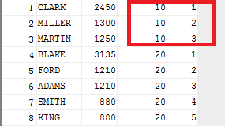

decod函数：
decode(expr,search1,result1,search2,result2…… default);if(expr=search1)return result1,不等，判断第二，一次类推，都比满足return default
用法：当一个表里有几组数，但我就想把他们分成2组时，可以将他们想分成一组的数取个值，用一个字段存储，在根据该字段分组就ok。
default(job, 'a','b' "c","b" 'f') def //然后别名def列里只有b，f了，再分组，很容易得到2组
排序函数[用的比较少]decod应用
解决分组后再排序，在分组里又有排序，这样又可直观查看分组里的排名
SELECT ename,sal,deptno, row_number() over( PARTITION BY deptno//分组 order by sal desc//排序 ) bb from emp;
上面的排序后发现数据一样的数排名还是随机+1，如下图，因此可以用rank() over[相同数据会一个排名，但他们的原位置还占用]与dense_rank() over[有顺序排序，不占位置]

高级分组函数[知道就行]
rollup() [里面的参数一个个减少]处理特殊情况的函数，当一个老板要同时查询一年，一月，一天的业绩，他们之间有规律分组时，可用rollup
group by a,b,c//一天的分组
uninou all
group by a,b//一月的分组
uninou all
group by a
可用group by rollup（a,b,d）一次解决
cube()函数 会将所有参数的每种组合都来一次执行查询
sets() 自定义分组函数，每个参数是种分组方式。后面将他们合并显示出来[用的比较多]
集合操作[用的少]
1.union[两个都有的] 、union all[两个都有的,并共同的会重复] 合集
2.intersect[取共同的] 交集
3.minus [第一个集减去第二个的] 差集
下面有应用